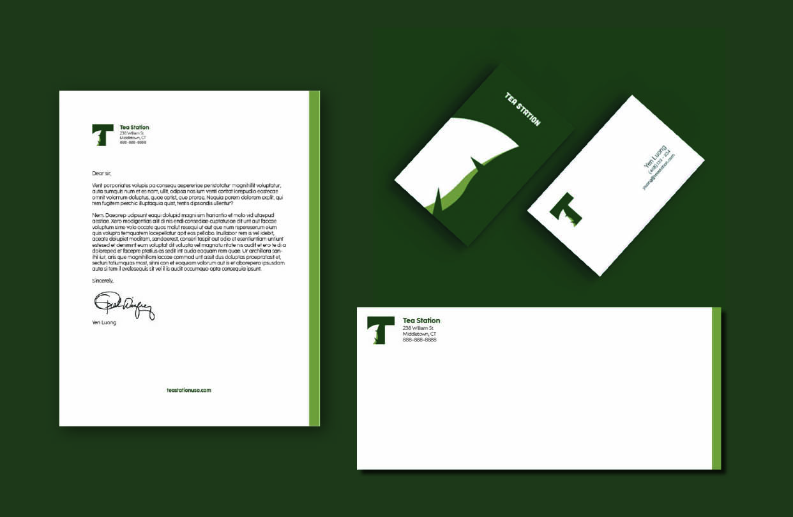

This project is centered on the revitalization of a boba shop's brand identity, including a fresh new logo and redesigned business cards. Drawing inspiration from the letter "T" and the imagery of a leaf, the logo concept symbolizes both the shop's name and the essence of freshness that sets boba beverages apart.
The vibrant green color sel ected for the logo embodies the vitality and zest that our boba shop represents. My primary goal is to craft a visually captivating brand identity that not only resonates with my target audience but also encapsulates the essence of my signature boba creations.
Incorporating this new logo into my business card design, I aim to create a lasting impression on my valued customers. The business cards will prominently feature the revitalized logo alongside essential contact information, ensuring that every interaction with our brand leaves a memorable mark.
My project endeavors to breathe new life into our boba shop's identity, infusing it with a sense of freshness and vibrancy that mirrors the exceptional quality of our beverages. Through this redesign, I seek to reaffirm my commitment to delivering an unforgettable boba experience to my patrons.